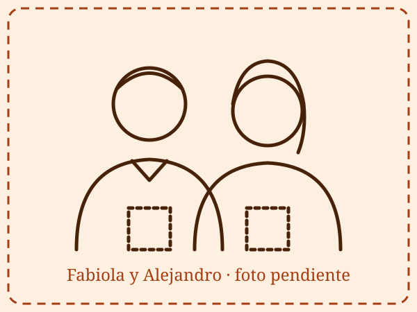

La Casita de GingerDonde la Navidad se vive todo el año
Nosotros
Una pastelería temática en Chillán donde la Navidad se vive todo el año.
Un rincón mágico en Chillán
Imagina entrar a una casita de jengibre, rodearte de detalles navideños, escuchar la música de la Navidad y disfrutar de algo delicioso. Ese es el mundo de La Casita de Ginger: un rincón mágico en Chillán donde la dulzura, la fantasía y la calidez se encuentran durante los 365 días del año.
Ven a conocernos, descubre nuestras delicias y déjate envolver por una experiencia que te hará sentir que la Navidad nunca termina.

Nuestra historia
Somos La Casita de Ginger, una pastelería temática ubicada en Chillán, inspirada en las tradicionales casitas de galletita navideña y en la magia, la alegría y la calidez de la Navidad.
Nuestra propuesta nace de una idea especial: ¿por qué esperar hasta diciembre para vivir la Navidad? En nuestra casita, la Navidad está presente durante todo el año. Nuestra decoración, los detalles de cada rincón y la música navideña que acompaña a nuestros visitantes crean una atmósfera acogedora y mágica que invita a desconectarse de la rutina y volver a disfrutar de la ilusión de esta época tan especial.
En el corazón de nuestro mundo está Ginger, nuestra galletita de jengibre y personaje estrella de la marca. Ginger representa la dulzura, la alegría y el espíritu de nuestra casita. Es parte fundamental de nuestra identidad y acompaña la experiencia que queremos entregar a cada persona que nos visita.
Ofrecemos tortas, pastelería, galletas, preparaciones tradicionales chilenas y otras delicias elaboradas con dedicación, buscando sorprender con sus sabores y convertir cada ocasión en un momento especial.
En La Casita de Ginger no solo vienes a comprar algo rico: vienes a vivir una experiencia, disfrutar de un ambiente diferente y llevarte un poquito de magia navideña en cualquier época del año.
Atendemos presencialmente en nuestro local y también recibimos pedidos y consultas a través de nuestras redes sociales y WhatsApp.
✦ ✦ ✦
Misión
Endulzar la vida de nuestros clientes a través de productos de pastelería y repostería artesanal y natural elaborados con dedicación, calidad y cariño, ofreciendo mucho más que sabores: una experiencia mágica que despierte emociones, recuerdos felices y el espíritu de compartir.
Queremos que cada persona que visite La Casita de Ginger sienta que entra a un pequeño mundo de fantasía, donde la Navidad nunca termina. A través de nuestra decoración navideña, la música característica de esta época, nuestros productos y la compañía de Ginger, nuestra querida galletita de jengibre, buscamos regalar momentos únicos, llenos de dulzura, alegría y calidez.
✦ ✦ ✦
Visión
Convertirnos en una pastelería temática reconocida y querida en Chillán y sus alrededores, destacándonos no solo por la calidad y el sabor de nuestros productos, sino también por ofrecer una experiencia diferente, auténtica e inolvidable.
Queremos que La Casita de Ginger sea reconocida como ese lugar especial donde se puede vivir la magia de la Navidad durante los 365 días del año, un espacio que invite a las familias a compartir, disfrutar y crear recuerdos, y donde Ginger se convierta en un personaje entrañable para nuestros clientes.
Aspiramos a seguir creciendo, fortaleciendo nuestra identidad y llevando la magia de nuestra casita a más personas, tanto a través de nuestro local físico como de nuestros canales digitales.
Conoce a Ginger, nuestro personaje estrella
¡Hola! Soy Ginger, la galletita de jengibre que da vida a esta dulce aventura.
Mi hogar es La Casita de Ginger, un lugar donde siempre hay motivos para sonreír, compartir algo rico y disfrutar de la magia de la Navidad. Aquí, las luces, los adornos, la música navideña y los aromas dulces forman parte de nuestra historia durante todo el año.
Quiero darte la bienvenida a nuestro mundo, donde cada visita puede convertirse en un recuerdo inolvidable y cada delicia es una invitación a disfrutar de los pequeños placeres de la vida.
¡Te esperamos en nuestra casita, donde la Navidad nunca termina!
Una experiencia navideña durante todo el año
La Casita de Ginger es un lugar diferente. Nuestra ambientación temática, la decoración navideña y la música que acompaña cada jornada crean una experiencia que invita a disfrutar de la Navidad en cualquier mes del calendario.
Queremos que cada visita sea una pausa de alegría, un momento para compartir en familia y una oportunidad para recuperar esa ilusión tan especial que sentimos en Navidad.
Lo que nos hace especiales
La familia de Ginger siempre tiene algo nuevo que mostrarte.
Concepto
Una casita de jengibre donde la magia de la Navidad se vive durante todo el año.
Nuestra frase
«Donde la Navidad se vive todo el año».
Personaje principal
Ginger, nuestra galletita de jengibre, protagonista de nuestra identidad.
Ambientación
Decoración navideña permanente, detalles inspirados en las casitas de jengibre y música navideña que acompaña cada visita.
Canales de atención
Atención presencial en nuestro local de Chillán y pedidos por redes sociales y WhatsApp.
Queremos compartir las experiencias y opiniones reales de quienes han visitado nuestra casita y disfrutado de nuestros productos. Sus comentarios nos ayudan a transmitir lo que hace especial a La Casita de Ginger: la combinación de sabores, atención cercana y una experiencia navideña única durante todo el año.
Un desayuno sorpresa que llegó al corazón
«Quiero agradecerle a usted y a todos los que contribuyeron a realizar esa cajita tan bella y que guarda muchos momentos vividos. Llena de detalles y palabras motivadoras. (…) Mil gracias por la gran atención recibida. Mi amiga está feliz.»
— Clienta de Constitución, Región del Maule (mensaje compartido en nuestro Instagram).
Puedes leer más opiniones en la sección destacada «Opiniones» de nuestro Instagram. ¿Ya nos visitaste? ¡Cuéntanos tu experiencia!